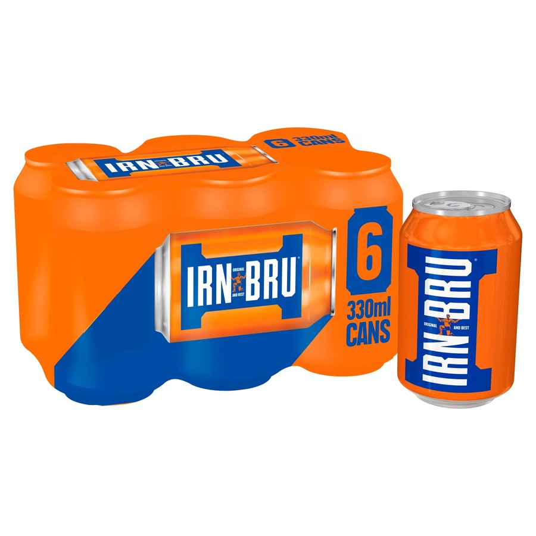

Import OnlyIRN-BRU · UK
Secret-recipe carbonated soda made with 32 flavours, launched in 1901
A Scottish staple with no regular US grocery distribution; US buyers need import/specialty channels.
Secret-recipe carbonated soda made with 32 flavours, launched in 1901. A Scottish staple with no regular US grocery distribution; US buyers need import/specialty channels. Made by A.G. Barr.The source link above opens the seller’s own page in a new tab.
✓ Availability: sold new — listings vary by seller · Last checked Oct 16, 2026